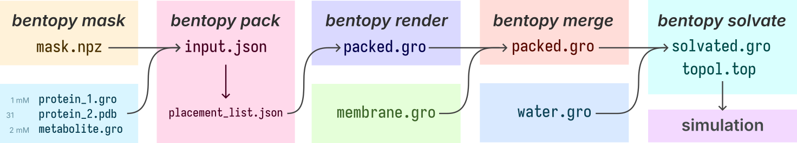
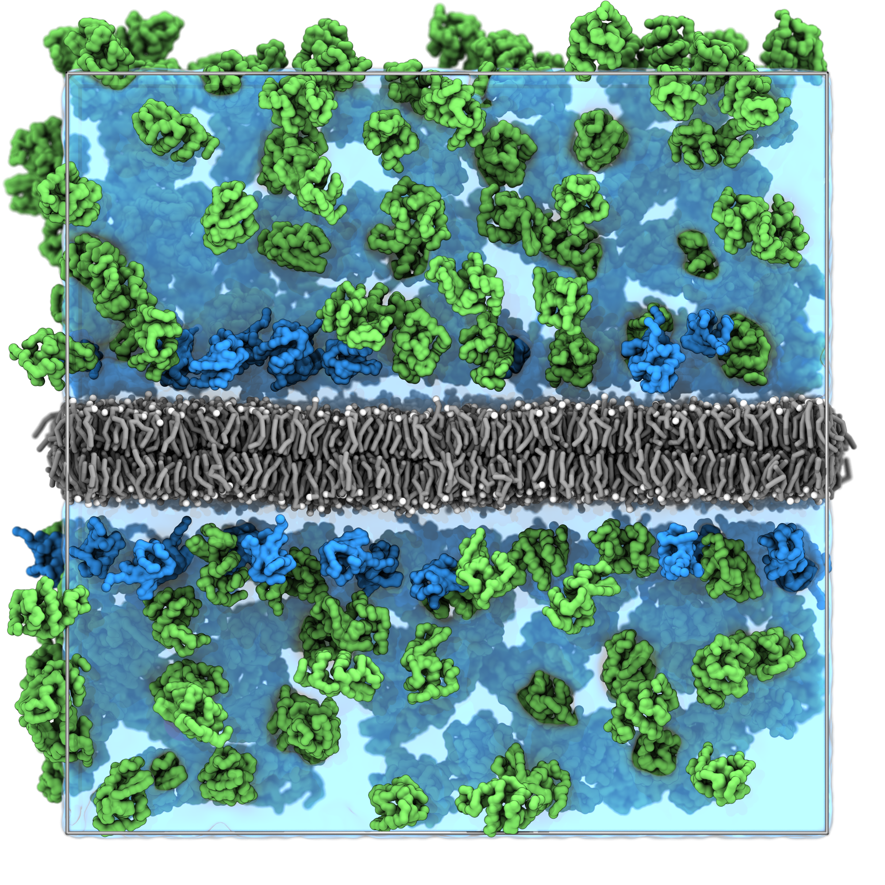
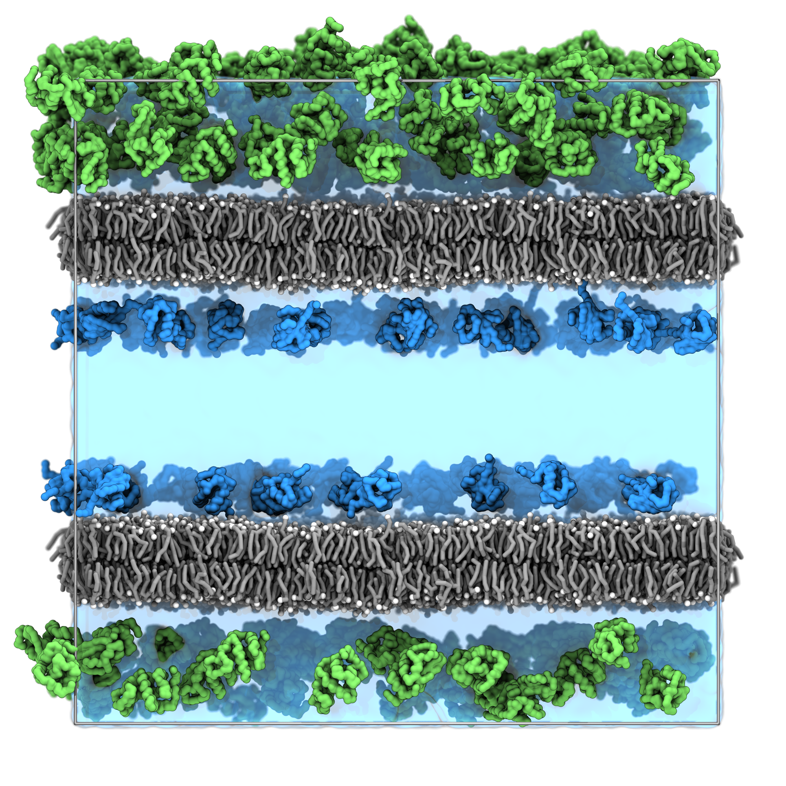
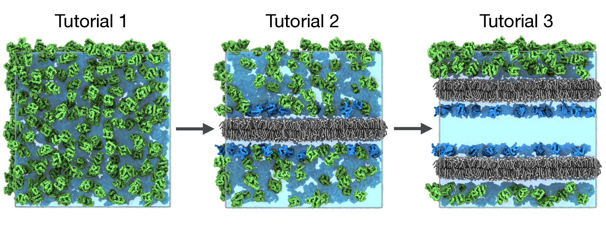

Bentopy: from simple packing to building cellular models
Tutorial authors: J.A. Stevens and M.S.S. Westendorp, with contributions from C.M. Brown and W. Nauta.
In case of issues: Please contact j.a.stevens@rug.nl or ma3ke.cyber@gmail.com.
Summary
Introduction
Bentopy¹ is a tool for packing molecules in arbitrary volumes, designed specifically for setting up large-scale molecular dynamics (MD) simulations. Through an efficient packing algorithm, bentopy can assemble molecular structures into MD models with biological densities and cellular-scales.

Figure 1: Showcase models. a) The bentopy logo, packed with bentopy. For those interested a thread on the making of this model can be found here. b) Mitochondrial cytoplasm model, showing distinct compartments with compartment-specific molecular components.
The tool was built to create cellular-scale models by integrating multiple structural components atphysiological concentrations while ensuring simulation compatibility. bentopy uses voxels to represent space as a regular 3D grid, providing computational efficiency for spatial operations like collision detection and informing molecule placement. For example, this voxel approach enables mdvcontainment to automatically identify compartments within molecular models for packing, which is a central feature of bentopy².
In this tutorial, we will showcase bentopy’s capabilities through three progressively complex tutorials that build on each other:
- Simple packing: Learn the basic workflow by packing proteins in empty space
- Packing around existing structures: Add a membrane and pack proteins around it
- Multi-compartment systems: Add a second membrane creating distinct compartments for different proteins
Each tutorial builds on the previous one, showing how to evolve a simple system into a complex model while using the standard bentopy workflow.

Figure 2: Bentopy workflow overview. The workflow consists of multiple consecutive steps including mask preparation, packing configuration, structure rendering, merging, and solvation.
Programs
Installing bentopy
Prerequisites: Bentopy is written in Rust, so a Rust compiler is required during installation. Check if Rust is present:
cargo --versionIf not present, install Rust through Rustup.
After installing Rust via rustup, you may need to reload your bash environment for the Rust tools (cargo, etc.) to be available in your PATH. Either restart your terminal or run:
source ~/.bashrc # For bash
source ~/.zshrc # For zshYou can verify the installation worked by running `cargo --version`.
Now you can install bentopy directly via pip:
pip3 install git+https://github.com/marrink-lab/bentopyDownload tutorial files
Before starting the tutorial, download the required structure and parameter files. You download the tutorial files here. Extract the files:
tar -xzf tutorial_files.tar.gz
cd tutorial_filesThis archive contains:
structures/- Provided structure files: proteins (lysozyme.pdb,ubiquitin.pdb), membranes (membrane.gro,double\_membrane.gro) and solvent (water.gro)topology/- Martini force field files and protein topologies (lysozyme.itp,ubiquitin.itp)mdp_files/- Example GROMACS input files (em.mdp,eq.mdp,md.mdp)
Other tools:
- Standard command line tools
- Visualisation software:
VMD
Tutorial 1: Basic Packing in Empty Space
Overview
We begin with the basic bentopy workflow by packing proteins into a simple cubic space. This tutorial introduces:
- The JSON input file syntax
- Analytical mask definitions
- The
bentopy-pack,bentopy-renderandbentopy-solvatecommands
Create the packing configuration
Bentopy uses recipe files to define packing parameters, they are stored in the JSON file format. Create a file called simple_packing.json and copy the contents from the dropdown below.
Click to show the complete recipe file
{
"space": {
"size": [40, 40, 40],
"resolution": 0.5,
"compartments": [
{
"id": "system",
"shape": "cuboid"
}
]
},
"output": {
"title": "simple_protein_system",
"topol_includes": [
"topology/martini_v3.0.0.itp",
"topology/martini_v3.0.0_ions_v1.itp",
"topology/martini_v3.0.0_solvents_v1.itp",
"topology/lysozyme.itp"
]
},
"segments": [
{
"name": "LYS",
"path": "structures/lysozyme.pdb",
"number": 650,
"compartments": ["system"]
}
]
}Note the key parts in this bentopy recipe:
Space section: Defines a 40×40×40 nm³ simulation box with 0.5 nm voxel resolution. The "shape": "cuboid" creates an analytical mask filling the entire box.
Output section: Sets the system title and specifies topology files for GROMACS compatibility. These files will be included when we generate the final topology.
Segments section: Defines 650 lysozyme proteins to be randomly placed with full rotational freedom in the “system” compartment.
Pack the system
Perform the packing step with a fixed random seed for reproducibility:
bentopy-pack --seed 5172 simple_packing.json placements.jsonThe output placements.json contains all placement information in a lightweight instanced file format.
Render the structure
Convert the placement list to a Gromacs coordinate file:
bentopy-render placements.json system.gro -t topol.topThis creates system.gro with all protein coordinates and topol.top with the simulation topology.
Splitting the computationally intensive packing step from the fast rendering process allows for more efficient workflows with large systems. This workflow also improves the shareability of models, as distributing the lightweight placement file is orders of magnitude more efficient than sharing the complete coordinate file.
Solvation
Add water and ions to complete the system preparation:
bentopy-solvate -i system.gro -w structures/water.gro -o solvated_system.gro \
-s NA:0.15M -s CL:0.15M --charge 5440 -t topol.topKey solvation options used:
-s NA:0.15M -s CL:0.15M: Add 150 mM NaCl concentration--charge 5440: Neutralize the system charges due to the net positive charge of each lysozyme monomer (add/remove ions as needed)-t topol.top: Append solvent information to topology file
We have now created a fully solvated system with 150 mM NaCl concentration and neutralized the system charge, ready for MD simulation.
Bentopy-solvate is specifically designed and optimized for solvating large-scale models with millions or billions of particles, where traditional solvation tools become impractically slow. For this small system, you won’t notice the performance benefits, but it works just as well.
Visualization and analysis
Open the system with VMD to inspect the packing:
vmd solvated_system.groThe result should be similar to the snapshot shown below, you can observe:
- The lysozyme proteins are distributed uniformly throughout the simulation box.
- The lysozyme proteins are packed at cytoplasmic densities.
- No proteins overlap

Figure 3: Basic protein packing. Lysozyme proteins packed in a cubic box with water and ions with non-overlapping placements.
EXTRA: Try a different analytical mask
Before moving to the next tutorial, you can experiment a bit by trying a different analytical compartment shape. Simply replace the compartment definition in your simple_packing.json file to pack proteins inside a sphere instead of a cube like:
"compartments": [
{
"id": "system",
"analytical": {
"shape": "spherical",
"radius": 20,
"center": [20.0, 20.0, 20.0]
}
}
]Note that the available space to pack proteins got smaller, so not all the requested proteins were placed. Bentopy indicated this with the remark ‘<’ in the packing summary that gets printed to your terminal. It’s advised to save this summary to a file as it contains all the relevant packing information for your project.
Setting up compartments...
Loading segment structures...
Rearranging segments according to the MomentOfInertia method... Done.
( 1/1) Attempting to pack 650 instances instances of segment 'LYZ'.
Packing process took 0.128 s.
idx name ok% target placed time (s) remark
---- ---------- ------ ------ ------ -------- ------
0 LYZ 50.5% 650 328 0.13 <
50.5% 650 328 0.13 <
Writing placement list to "placements.json"... Done in 0.353 s.Tutorial 2: Packing Around Existing Structures
Overview
In this tutorial, we’ll add a membrane that creates excluded volume, ensuring proteins are not placed within it. We’ll also introduce packing rules to place specific proteins close to the membrane surface. This tutorial introduces:
- Compartment definitions using voxel masks generated from existing structures
- Proximity-based placement rules
- The
bentopy-maskandbentopy-mergecommands
Inspect the mask compartments
Before creating masks, it’s essential to understand what compartments bentopy identifies in your system. First, generate a visualisation file to inspect the compartments identified in the voxel representation:
bentopy-mask structures/membrane.gro -b labels.gro --autofill --no-interactiveThis automatically generates the debug file labels.gro. Visualise the voxel representation of our membrane system by opening the file with VMD:
vmd labels.groHere you can use the following atom selections to visualise the identified compartments:
- Solvent regions (available for packing):
name “-1” - membrane region (excluded from packing):
name 1
The negative label (-1) typically represents the outermost compartment (solvent), while positive labels (1) represent inner or solid structures (membrane). Understanding these labels is important for selecting the correct compartments for protein placement.
Create the masks
Now that you understand the compartments, we will create the masks to guide our protein placement. First, run the masking command and follow the interactive prompts:
bentopy-mask structures/membrane.gro solvent_mask.npzWhen running the masking command, you’ll encounter several interactive prompts during the process. For most prompts (such as debug file outputs), you can simply press Enter to skip and continue. The important prompt is the compartment selection where you’ll see options [-1 1], here you should select -1 to choose the solvent regions where proteins can be placed. This creates solvent_mask.npz, a compressed voxel representation of the available space for protein packing.
Next, we need a separate mask representing the membrane itself. This will be used for proximity rules to place proteins near the membrane surface. Run the masking command again with a different output filename:
bentopy-mask structures/membrane.gro membrane_mask.npzWhen prompted with the compartment options [-1 1], select 1 to choose the membrane region. This creates membrane_mask.npz. Having both masks allows us to exclude proteins from the membrane (using the solvent mask) while simultaneously attracting certain proteins toward the membrane surface (using the membrane mask for proximity rules).
Update the recipe
Now modify your bentopy recipe to use the aqueous mask and include proximity rules. Create membrane_packing.json and copy the contents from the dropdown below:
Click to show the complete configuration file
{
"space": {
"size": [40, 40, 40],
"resolution": 0.5,
"compartments": [
{
"id": "solvent",
"voxels": {
"path": "solvent_mask.npz"
}
},
{
"id": "membrane",
"voxels": {
"path": "membrane_mask.npz"
}
}
]
},
"output": {
"title": "system_w_membrane",
"topol_includes": [
"topology/martini_v3.0.0.itp",
"topology/martini_v3.0.0_ions_v1.itp",
"topology/martini_v3.0.0_solvents_v1.itp",
"topology/martini_v3.0.0_phospholipids_v1.itp",
"topology/lysozyme.itp",
"topology/ubiquitin.itp"
]
},
"segments": [
{
"name": "LYZ",
"path": "structures/lysozyme.pdb",
"number": 300,
"tag": "LYZ",
"compartments": [
"solvent"
]
},
{
"name": "UBQ",
"path": "structures/ubiquitin.pdb",
"number": 100,
"tag": "UBQ",
"compartments": [
"solvent"
],
"rules": [
"is_closer_to membrane 5.0"
]
}
]
}Note the key changes in this bentopy recipe:
- Reduced total protein numbers (less available space due to membrane).
- Added ubiquitin with a proximity rule to stay within 5 nm of the membrane surface. See the Advanced Features section for more information on packing rules.
- Added the ‘tag’ option, which will overwrite the resnames in each segment for easier visualization.
Using tags will override the original residue names in the gro file that bentopy outputs. While this makes visualization easier to inspect bentopy output (e.g., selecting all lysozyme with `resname LYZ`), it may cause issues with analysis tools that expect standard residue names. Note that during MD simulation, GROMACS will automatically assign the correct chemical residue names based on the topology file, so simulation output will have proper residue naming.
Pack the system
Perform the packing step with a fixed random seed for reproducibility:
bentopy-pack --seed 5172 --rearrange moment-of-inertia membrane_packing.json placements.jsonThe --rearrange flag optimizes the placement order of the segments using a heuristic for packing difficulty. Here we use the moment of inertia to determine the order in which the segments should be placed, this dramatically improves the packing densities that can be reached with bentopy.
Other heuristics are available to rearrange segments based on packing difficulty. The implemented options are:
- moment-of-inertia (orders by rotational inertia, used here)
- volume (orders by molecular volume)
- bounding-sphere (orders by bounding sphere radius)
- None (takes the order from the user-specified .json input file).
In our testing, moment-of-inertia worked best for most systems, but for specific use cases it may be worth experimenting with other options.
Render and merge
Convert the placement list to a Gromacs coordinate file and combine the packed proteins with the membrane structure.
bentopy-render placements.json packed_proteins.gro -t topol.top
# Merge proteins with membrane structure
bentopy-merge packed_proteins.gro structures/membrane.gro -o system.gro
echo "POPC 5408" >> topol.top # Add lipid molecules to the topology file.The merge command combines the original membrane with packed proteins.
Solvation
Add water and ions to complete the system preparation:
bentopy-solvate -i system.gro -w structures/water.gro -o solvated_system.gro \
-s NA:0.15M -s CL:0.15M --charge 2400 -t topol.topVisualization and analysis
Open the system with VMD to inspect the packing:
# Visualize in VMD
vmd solvated_system.groSince we used tags, you can now use the selections resname UBQ and resname LYZ in VMD to select the ubiquitin and lysozyme proteins respectively.
The result should be similar to the snapshot shown below, you can observe:
- The lysozyme proteins are distributed throughout the aqueous regions.
- The ubiquitin proteins concentrated near the membrane surfaces due to the proximity rule.
- No protein overlaps with the membrane structure.

Figure 4: Membrane system with proximity rules. The membrane (gray) creates excluded volume, with lysozyme proteins (green) distributed throughout the solvent region and ubiquitin proteins (blue) concentrated near the membrane surface.
Tutorial 3: Multi-Compartment Systems with Placement Rules
Overview
Now we’ll add even more complexity by creating a double membrane system that forms distinct compartments. Different proteins will be placed in different compartments. This tutorial demonstrates:
- Compartment-specific protein placement
We’ll use the provided double membrane to create distinct inner and outer compartments, then place different proteins in each compartment.
Inspect the double membrane structure
First, let’s examine the double membrane structure we’ll be working with:
vmd structures/double_membrane.groNotice how this system has two lipid bilayers, creating three distinct regions: the space between the membranes (inner compartment), the space outside the membranes (outer compartment), and the membrane regions themselves. This structure represents a compartmentalised space similar to a vesicle or double-layer cell wall.
Create compartment-specific masks
Generate masks for the different compartments created by the double membrane:
bentopy-mask structures/double_membrane.gro mask.npz --inspect-labels-path compartment_labels.gro --autofill --no-interactiveVisualise the voxel representation of our membrane system by opening the file with VMD:
vmd compartment_labels.groNow also double-check the different spatial compartments identified by the containment algorithm:
- Outer compartment (outside the membrane system):
name “-1” - Inner compartment (between the two membranes):
name “-2” - membrane regions (excluded):
name 1 2
Create separate masks for each compartment
Create individual masks for precise control:
# Interactive mask creation for outer compartment: label -1
bentopy-mask structures/double_membrane.gro outer_mask.npz --no-interactive --labels -1
# Interactive mask creation for inner compartment: label -2
bentopy-mask structures/double_membrane.gro inner_mask.npz --no-interactive --labels -2
# Interactive mask creation for the membranes: labels 1 2
bentopy-mask structures/double_membrane.gro memb_mask.npz --no-interactive --labels 1,2Since we’re now using the --no-interactive flag of bentopy-mask, we will not be prompted by the interactive selection. The requested labels selection is written to the specified mask .npz file.
Update the configuration with compartments
Create a new configuration file compartment_packing.json with multiple compartments and different protein compositions:
Click to show the complete configuration file
{
"space": {
"size": [40, 40, 40],
"resolution": 0.5,
"compartments": [
{
"id": "inner_compartment",
"voxels": {
"path": "inner_mask.npz"
}
},
{
"id": "outer_compartment",
"voxels": {
"path": "outer_mask.npz"
}
},
{
"id": "membrane",
"voxels": {
"path": "memb_mask.npz"
}
}
]
},
"output": {
"title": "compartmentalized_system",
"topol_includes": [
"topology/martini_v3.0.0.itp",
"topology/martini_v3.0.0_ions_v1.itp",
"topology/martini_v3.0.0_solvents_v1.itp",
"topology/martini_v3.0.0_phospholipids_v1.itp",
"topology/lysozyme.itp",
"topology/ubiquitin.itp"
]
},
"segments": [
{
"name": "LYZ",
"path": "structures/lysozyme.pdb",
"number": 200,
"tag": "LYZ",
"compartments": [
"outer_compartment"
]
},
{
"name": "UBQ",
"path": "structures/ubiquitin.pdb",
"number": 100,
"tag": "UBQ",
"compartments": [
"inner_compartment"
],
"rules": [
"is_closer_to membrane 4.0"
]
}
]
}Note the key changes in this bentopy recipe:
- Added multiple compartments (inner and outer)
- Placed lysozyme only in the outer compartment
- Placed ubiquitin only in the inner compartment
Pack the system
Perform the packing step with a fixed random seed for reproducibility:
bentopy-pack --seed 5172 --rearrange moment-of-inertia compartment_packing.json placements.jsonRender and merge
Convert the placement list to a Gromacs coordinate file and combine the packed proteins with the membrane structure.
bentopy-render placements.json packed_proteins.gro -t topol.top
# Merge proteins with membrane structure
bentopy-merge packed_proteins.gro structures/double_membrane.gro -o system.gro
echo "POPC 10816" >> topol.top # Add lipid molecules to the topology file.Solvation
Add water and ions to complete the system preparation:
bentopy-solvate -i system.gro -w structures/water.gro -o solvated_system.gro \
-s NA:0.15M -s CL:0.15M --charge 1600 -t topol.topVisualization and final analysis
Open the system with VMD to inspect the packing:
vmd solvated_system.groThe result should be similar to the snapshot shown below, you can observe:
- The lysozyme proteins are distributed throughout the outer compartment.
- The Ubiquitin proteins are concentrated near the membrane surfaces in the inner compartment.
- No protein overlaps with the membrane structure.

Figure 5: Multi-compartment double membrane system. The double membrane creates distinct inner and outer compartments. Ubiquitin (blue) is confined to the inner compartment between the membranes, while lysozyme (green) is placed only in the outer compartment.
Run a simulation
With the complete solvated system, you can now run a MD simulations using the provided input files:
# Energy minimization
gmx grompp -f mdp_files/em.mdp -c solvated_system.gro -p topol.top -o em.tpr
gmx mdrun -v -deffnm em
#Make index file
gmx make_ndx -f em.gro -o index.ndx << EOF
name 13 Lipid
r W | r ION
name 16 Solvent
q
EOF
# Equilibration
gmx grompp -f mdp_files/eq.mdp -c em.gro -p topol.top -o eq.tpr -n index.ndx
gmx mdrun -v -deffnm eq
# Production run
gmx grompp -f mdp_files/md.mdp -c eq.gro -p topol.top -o md.tpr -n index.ndx
gmx mdrun -v -deffnm mdYou’ve now learned the complete bentopy workflow from simple packing to a complex MD mode!
Through these three tutorials, you’ve learned how bentopy can help you build complex molecular models with a well-structured workflow. This scalable approach enables researchers to construct everything from crowded cytoplasm to whole-cell models with multiple compartments. The strength of bentopy lies in its ability to handle this complexity efficiently, making large-scale modeling accessible without sacrificing the molecular detail needed for accurate biological representation.

Figure 6: Tutorial progression from simple protein packing to complex multi-compartment systems.
Advanced Features and Tips
Solvation Options
Bentopy includes bentopy-solvate, a solvation tool optimized for large-scale systems. For the complete documentation, see the bentopy-solvate README.
Ion substitutions with different quantities
# Molarity: 150 mM NaCl
bentopy-solvate -i system.gro -w water.gro -o solvated.gro -s NA:0.15M -s CL:0.15M
# Fixed number: exactly 100 Na+ and 100 Cl- ions
bentopy-solvate -i system.gro -w water.gro -o solvated.gro -s NA:100 -s CL:100
# Ratio: replace 1% of water with Na+ ions
bentopy-solvate -i system.gro -w water.gro -o solvated.gro -s NA:0.01Set custom cutoff distances
For models with compartments, fine-tuning the number of water beads in the compartments is crucial for achieving a well solvated model. The --cutoff flag controls the minimum distance between solvent and structure beads, allowing you to adjust the water bead placement. Increasing the cutoff creates more space around solutes (fewer water molecules), while decreasing it allows tighter packing (more water molecules).
bentopy-solvate -i system.gro -w water.gro -o solvated.gro \
--cutoff 0.5 --solvent-cutoff 0.25Render Options for Large Systems
For large systems, bentopy-render provides several options to manage visualization and analysis:
Limiting render regions
Render only a specific region using --limits (format: minx,maxx,miny,maxy,minz,maxz):
# Render a 10×10×10 nm cube from (40,40,40) to (50,50,50)
bentopy-render placements.json small_region.gro --limits 40,50,40,50,40,50
# Render a thin slice in z-direction only
bentopy-render placements.json slice.gro --limits none,none,none,none,45,55Reduced atom rendering
Use --mode to render fewer atoms for easier visualization:
# Render only alpha carbons
bentopy-render placements.json alpha_only.gro --mode alpha
# Render one bead per residue
bentopy-render placements.json residue_beads.gro --mode residue
# Render one bead per protein instance
bentopy-render placements.json instance_beads.gro --mode instanceReduced rendering modes cannot generate topology files. Use --mode full (default) when topology files are needed.
Residue numbering control
Control how residue numbers are assigned using --resnum-mode:
# Each protein instance gets unique residue number
bentopy-render placements.json system.gro --resnum-mode instance
# All instances of same protein type get same residue number
bentopy-render placements.json system.gro --resnum-mode segmentResidue name relabeling
Assign custom residue names when merging files for better organization and visualization:
# Assign custom residue names using colon syntax
betopy-merge membrane.gro:MEM packed_proteins.gro:PROT -o complete_system.gro
# Multiple components with descriptive labels
bentopy-merge membrane.gro:MEM cytosol.gro:CYT chromosome.gro:CHR -o cell.groThis allows easy selection and visualization of different system components in molecular viewers.
Alternative Configuration Options
Using concentrations instead of fixed numbers
Specify physiological concentrations (in mol/L) instead of absolute copy numbers:
"segments": [
{
"name": "LYZ",
"path": "structures/lysozyme.pdb",
"concentration": 5.0,
"compartments": ["system"]
}
]Controlling protein rotations
Constrain or set initial rotations for more realistic placement:
"segments": [
{
"name": "LYZ",
"path": "structures/lysozyme.pdb",
"number": 50,
"compartments": ["system"],
"rotation_axes": "z"
}
]rotation_axes: Limit random rotations to specific axes (e.g.,"z","xy","xyz")
Compartment combinations
Create complex spaces using boolean operations on preexisting compartments:
"compartments": [
{
"id": "a",
"analytical": {
"shape": "spherical",
"radius": 7.5,
"center": [7.5, 10.0, 10.0]
}
},
{
"id": "b",
"analytical": {
"shape": "spherical",
"radius": 7.5,
"center": [12.5, 10.0, 10.0]
}
},
{
"id": "c",
"combination": "intersect(a b)"
},
{
"id": "d",
"combination": "!c"
}
]Command Line Tips
Inspect placement lists:
Use jq to view placement files in readable format:
jq . placements.jsonTroubleshooting Common Issues
Packing failures:
- Check bentopy’s packing summary output to see which segments failed
- Use the
--verboseflag ofbentopy-packfor detailed information on the packing process - Double-check molecule counts/concentrations against available space
- Use the
BENTOPY_TRIES=10000environment variable to increase placement attempts
Mask problems:
- Ensure mask dimensions match space size ÷ resolution
- Use the
--inspect-labels-pathflag ofbentopy-mask,to output a visualization file for the voxel representation of the identified compartments. - Try different containment/mask resolutions if too many compartments are identified
Rendering errors:
- Verify all structure paths in placement list are accessible
- Check structure file formats (PDB/GRO supported)
Topology issues:
- Ensure segment names in JSON match molecule names in .itp files
- Verify all .itp files listed in
topol_includesexist
References
[1] Westendorp, M.S.S, Stevens, J.A. et al. Bentopy: building molecular dynamics simulations with cellular complexity and scale. In preparation.
[2] Bruininks, B.M.H. et al. MDVcontainment: Robust characterization of inside and outside in periodic spaces. In preparation.
For additional support, examples, and updates, visit the bentopy GitHub repository.